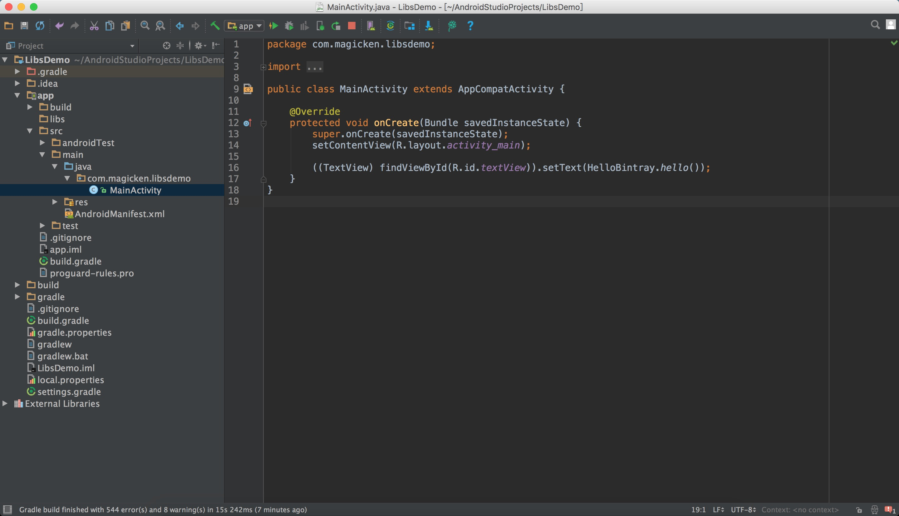

本文所分享的经验，是使用Android Studio配合Bintray将自己的常用依赖包上传到JCenter，以提高项目的编译速度，并且更加方便地发布版本和试用。
在开始前，有兴趣的可以先做个尝试：
1
| compile 'com.magicken.android:hello-bintray:1.0.0'
|
调用HelloBintray.hello()可以得到以下字符串：
1
| You ara using a package from bintray!
|
准备
这块需要分网络和本地两部分讲。
Part1
首先，我们需要两个账号：
- 一个git仓库账号，可以是Github或者Coding；
- 一个Bintray账号。
在申请第二个账号时需要注意三点：
1、最近（2017/1/1）申请Bintray的账号和以前略有不同，现在注册的账号需要设置组织（Organizations），且账号默认有一段时间的高级版（Premium）免费试用。当我手动中止试用资格时，注册账号时同时申请的组织会变成不可用，且无法添加同名的组织。
2、可能是为了推广组织的使用，在刚注册账号登录后会默认进入申请的组织组织下，在此界面有所拥有的仓库（Owned Repositories）模块，上传自己的依赖包需要先在该模块下新建仓库。点击右上角头像下标的View Profile后显示的账户界面如下：
可以看到并没有所拥有的仓库的模块，也就无法添加仓库（Repository）（这里的仓库跟Github上的仓库概念有点不同，这里的一个仓库可以添加多个包（Package），一个包可上传一个依赖库），也即只能在组织下添加仓库。但很奇怪的，我确定我并没有做什么操作，在一段时间后所拥有的仓库又出现了：

3、因为上面两点原因，我只能添加普通版的组织，点击Add New Organization：

选择Create new organization后：

在这里输入你喜欢的组织名字，点击Create即可。
在组织下面的添加仓库和账户主界面添加的仓库，对于后面上传文件的配置中有个不大却很重要的差别，这里暂且按下，后面再提。
接着在这个组织下添加仓库，点击Add New Repository：
注意类型（Type）选择Maven，但名字（Name）则不一定是maven。这个名字在后面的配置文件会用到。
成功之后可以选择查看自己已创建的仓库界面：
然后点击Add New Package到新建包界面：
因为最后一项版本控制（Version Control）属于必填，所以需要现在之前申请Coding上新建一个仓库，并把对应的网址填进去（因是中文界面，操作简单，这里就不贴步骤了）。虽然这个网址对后面的上传似乎并没有很大影响。
到这里，我们已经完成了在Bintray上的工作，接下来是在本地配置需要上传的包。
Part2
在项目的build.gradle文件中添加两行代码，以加载上传操作所需用到的插件：
1 2
| classpath 'com.jfrog.bintray.gradle:gradle-bintray-plugin:1.7' classpath 'com.github.dcendents:android-maven-gradle-plugin:1.4.1'
|
加在这个位置：
1 2 3 4 5 6 7 8 9 10 11 12 13 14 15 16 17 18 19 20
| buildscript { repositories { jcenter() } dependencies { classpath 'com.android.tools.build:gradle:2.2.3' classpath 'com.jfrog.bintray.gradle:gradle-bintray-plugin:1.7' classpath 'com.github.dcendents:android-maven-gradle-plugin:1.4.1' } } allprojects { repositories { jcenter() } }
|
新建一个与上文中创建包时同名（hello-bintray）的项目作为依赖包（后简称包项目），使用现有依赖包项目同理。在包项目下新建bintrayUpload.gradle文件和local.properties，且将前者通过apply from: "bintrayUpload.gradle"应用到包项目的build.gradle中：
将以下代码拷贝到bintrayUpload.gradle中：
1 2 3 4 5 6 7 8 9 10 11 12 13 14 15 16 17 18 19 20 21 22 23 24 25 26 27 28 29 30 31 32 33 34 35 36 37 38 39 40 41 42 43 44 45 46 47 48 49 50 51 52 53 54 55 56 57 58 59 60 61 62 63 64 65 66 67 68 69 70 71 72 73 74 75 76 77 78 79 80 81 82 83 84 85 86 87 88 89 90 91 92 93 94 95 96 97 98 99 100 101 102 103 104 105 106 107 108 109 110 111 112 113 114
| apply plugin: 'com.github.dcendents.android-maven' apply plugin: 'com.jfrog.bintray' Properties properties = new Properties() File localPropertiesFile = project.file("local.properties"); if(localPropertiesFile.exists()){ properties.load(localPropertiesFile.newDataInputStream()) } def projectName = properties.getProperty("project.name") def projectGroupId = properties.getProperty("project.groupId") def projectArtifactId = properties.getProperty("project.artifactId") def projectVersionName = android.defaultConfig.versionName def projectPackaging = properties.getProperty("project.packaging") def projectSiteUrl = properties.getProperty("project.siteUrl") def projectGitUrl = properties.getProperty("project.gitUrl") def projectVersion = properties.getProperty("project.version") def developerId = properties.getProperty("developer.id") def developerName = properties.getProperty("developer.name") def developerEmail = properties.getProperty("developer.email") def bintrayUser = properties.getProperty("bintray.user") def bintrayApikey = properties.getProperty("bintray.apikey") def javadocName = properties.getProperty("javadoc.name") group = projectGroupId version = projectVersion install { repositories.mavenInstaller { pom { project { name projectName groupId projectGroupId artifactId projectArtifactId version projectVersionName packaging projectPackaging url projectSiteUrl licenses { license { name 'The Apache Software License, Version 2.0' url 'http: } } developers { developer { id developerId name developerName email developerEmail } } scm { connection projectGitUrl developerConnection projectGitUrl url projectSiteUrl } } } } } task sourcesJar(type: Jar) { from android.sourceSets.main.java.srcDirs classifier = 'sources' } artifacts { archives sourcesJar } bintray { user = bintrayUser key = bintrayApikey configurations = ['archives'] pkg { repo = "maven" name = projectName userOrg = 'magickendev' vcsUrl = projectGitUrl licenses = ["Apache-2.0"] publish = true } }
|
这是上传操作配置的核心代码，其中被注释掉的主要是java doc相关代码，如果有需要上传文档，可以取消注释。这里要回答上文说到的配置文件中不大却很重要的区别，末尾的bintray代码块里的pkg代码块中的组织名字（也即上文添加的组织名）userOrg = 'magickendev'属性，在组织中添加的仓库需要加这个属性，但在账户主页添加仓库则不需要。
还有就是repo = "maven"是上面添加的仓库名，如果你的仓库名是cangjingkong，那这里就要改成repo = "cangjingkong"。
最后将配置的具体内容拷贝到local.properties中：
1 2 3 4 5 6 7 8 9 10 11 12 13 14 15 16 17 18 19 20
| project.name=hello-bintray project.groupId=com.magicken.android project.artifactId=hello-bintray project.packaging=aar project.siteUrl=https://coding.net/u/boanda/p/hello-bintray project.gitUrl=https://coding.net/u/boanda/p/hello-bintray/git project.version=1.0.0 javadoc.name=hello-bintray bintray.user=magicken bintray.apikey=**************************************** developer.id=magicken developer.name=mk developer.email=zhanggh801@gmail.com
|
其中project.version要和build.gradle中定义的versionName相同，否则可能上传失败，或者即使成功，也无法使用。还有就是user是Bintray的用户名，apikey在编辑账户信息中可以看到：

好了，以上就是所有的准备工作，接下来我们要将hello-bintray发布上去。
发布
在Android Studio的终端（Terminal）中运行：
成功的话，可以在最后看到这个信息：
接着运行：
如果上传成功，会看到最后看到以下信息：
打开刚刚在Bintray上创建的hello-bintray包，可以在右边的版本下看到我们上传的1.0.0：

这时我已经可以初步使用上传的包，在app的build.gradle中添加：
1
| compile 'com.magicken.android:hello-bintray:1.0.0'
|
因为还未连接到JCenter，还需要在项目的build.gradle中添加：
1 2 3
| maven{ url 'https://dl.bintray.com/magickendev/maven' }
|
添加位置：
1 2 3 4 5 6 7 8 9 10 11 12 13 14 15 16 17 18 19 20 21 22 23 24 25 26
| buildscript { repositories { jcenter() } dependencies { classpath 'com.android.tools.build:gradle:2.2.3' classpath 'com.jfrog.bintray.gradle:gradle-bintray-plugin:1.7' classpath 'com.github.dcendents:android-maven-gradle-plugin:1.4.1' } } allprojects { repositories { jcenter() maven{ url 'https://dl.bintray.com/magickendev/maven' } } }
|
我们先在setting.gradle中去掉刚刚已经上传的Module，并使用刚刚写的方法试一下效果：

运行结果：
好了，到这里已经成功大半了，接下来为了去掉下面这三行代码：
1 2 3
| maven{ url 'https://dl.bintray.com/magickendev/maven' }
|
我们要把上传到Bintray的文件添加到JCenter。很简单，点击hello-bintray包界面中右下角的Add
to JCenter：
然后在发送页面输入一些信息：
完了点击发送，最后就是耐心的等待，短则几个小时，长的要几天，就会收到一封添加成功的邮件，在Bintray的Inbox中也会收到消息：

再次进入hello-bintray包页面，右下角的Link to已经改变：
这时再去掉上面那三行代码，就万事大吉了。
– end